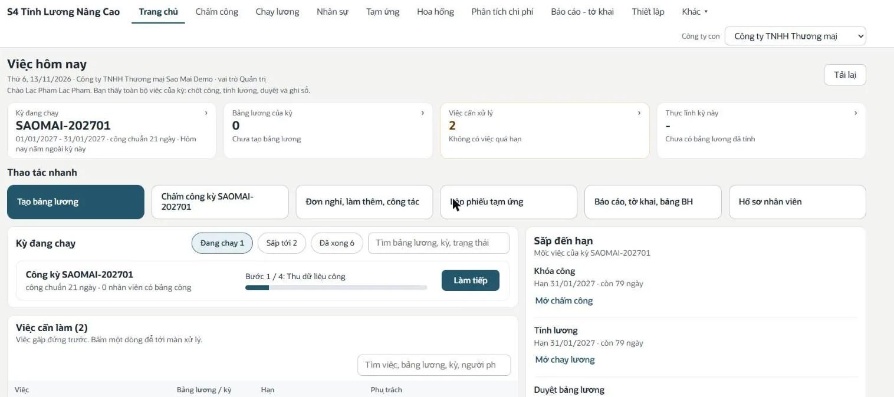
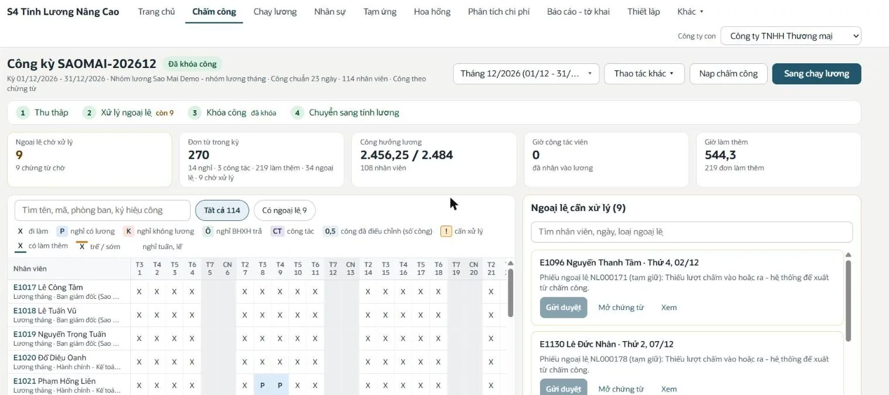
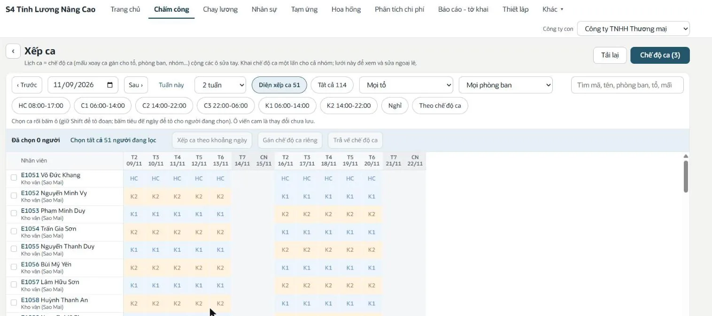
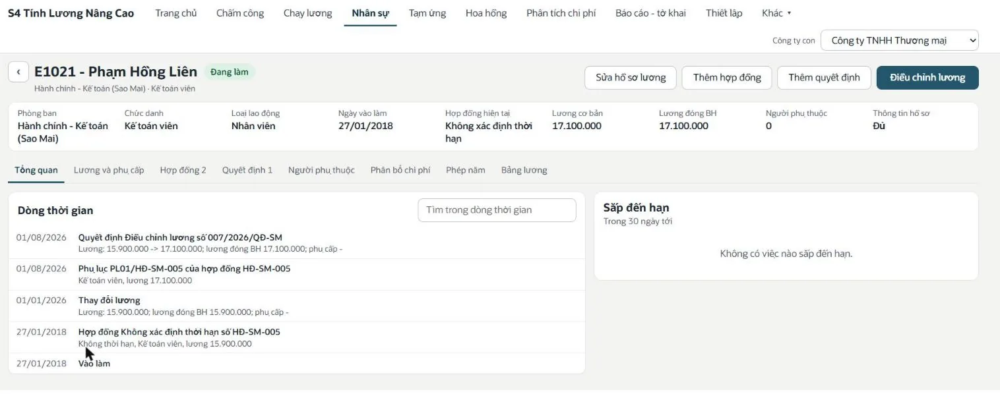
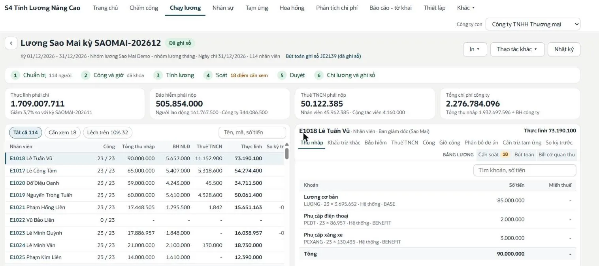
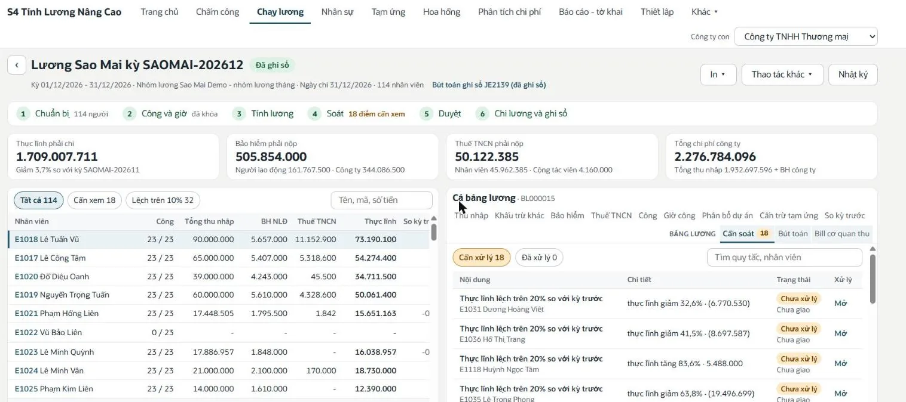
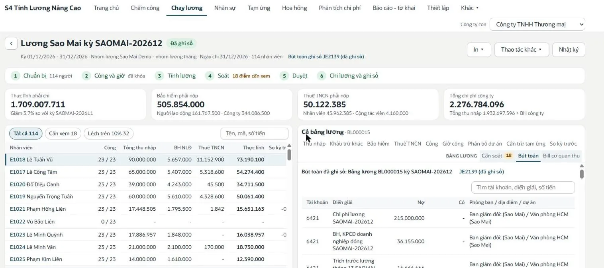
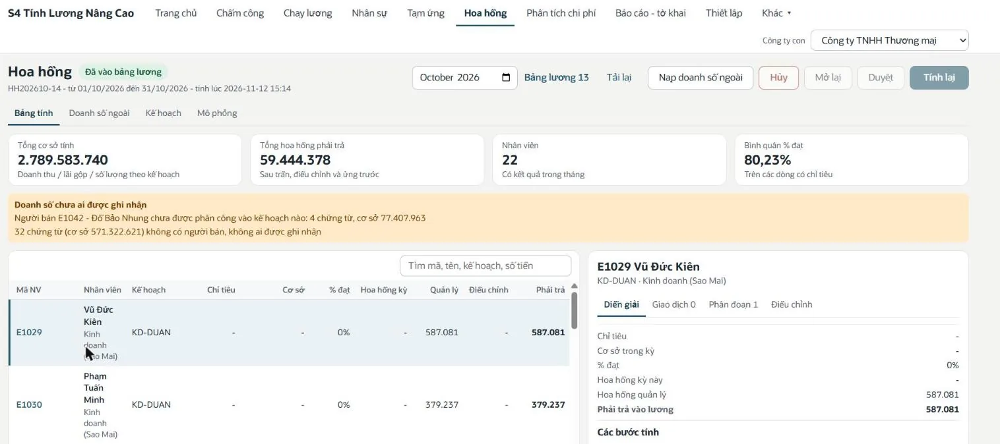
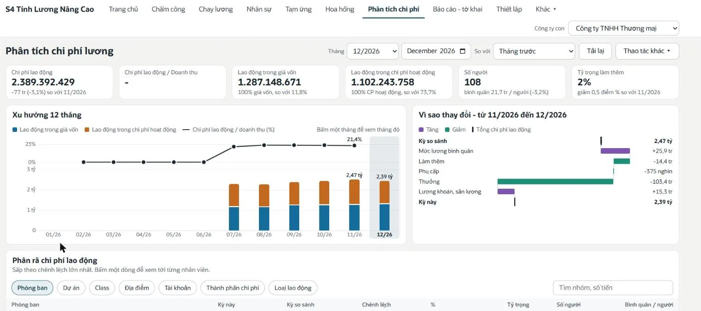
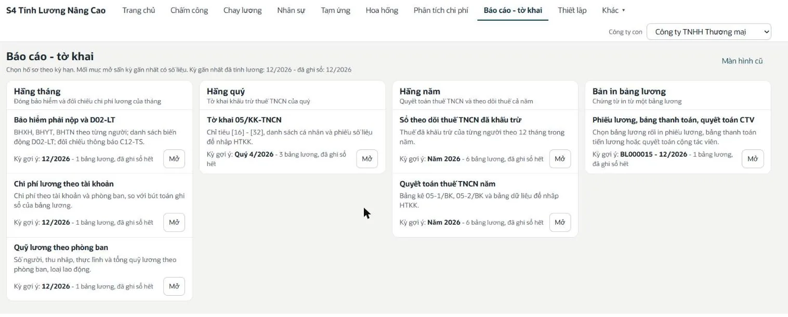

Người làm lương bắt đầu một ngày làm việc từ đâu?
Từ màn "Việc hôm nay". Màn này cho biết kỳ lương đang chạy, kỳ đang ở bước nào, còn việc gì phải làm và hạn nào sắp tới (khóa công, tính lương, duyệt, chi lương và ghi sổ). Các thao tác hay dùng như tạo bảng lương, mở chấm công, lập phiếu tạm ứng nằm ngay trên một hàng nút.

Bảng công của cả kỳ được theo dõi như thế nào?
Trên một lưới theo ngày cho từng nhân viên, với ký hiệu đi làm, nghỉ có lương, nghỉ không lương, công tác, làm thêm. Kỳ công đi qua bốn bước: thu thập, xử lý ngoại lệ, khóa công, chuyển sang tính lương. Các ngoại lệ như thiếu lượt chấm được gom vào một khung riêng để gửi duyệt hoặc mở chứng từ ngay tại chỗ.

Doanh nghiệp làm ca kíp xếp lịch ra sao?
Lịch ca được tính từ chế độ ca (mẫu xoay ca gán cho tổ, phòng ban hoặc nhân viên) cộng với các ô sửa tay. Người xếp ca khai chế độ ca một lần cho cả nhóm, sau đó chỉ dùng lưới để xem và sửa ngoại lệ, có thể chọn nhiều người để xếp theo khoảng ngày.

Dữ kiện lương của một nhân viên nằm ở đâu?
Trong một hồ sơ duy nhất: phòng ban, chức danh, hợp đồng hiện tại, lương cơ bản, lương đóng bảo hiểm, người phụ thuộc. Dòng thời gian ghi lại hợp đồng, phụ lục, quyết định điều chỉnh lương theo ngày hiệu lực, nên kỳ lương nào cũng tính đúng theo mức lương của thời điểm đó.

Một bảng lương được xử lý qua những bước nào?
Qua sáu bước trên cùng một màn: chuẩn bị, công và giờ, tính lương, soát, duyệt, chi lương và ghi sổ. Bốn ô số tổng cho thấy thực lĩnh phải chi, bảo hiểm phải nộp, thuế TNCN phải nộp và tổng chi phí công ty. Bấm vào một nhân viên để xem từng khoản thu nhập, khấu trừ, bảo hiểm, thuế và cách tính.

Làm sao phát hiện số bất thường trước khi duyệt?
Phân hệ tự so bảng lương với kỳ trước và liệt kê các điểm cần xem, ví dụ thực lĩnh của một nhân viên lệch trên 20%. Mỗi điểm có chi tiết chênh lệch và trạng thái xử lý, để người soát và người duyệt cùng nhìn một danh sách thay vì dò từng dòng trên Excel.

Chi phí lương lên sổ cái NetSuite như thế nào?
Mỗi bảng lương sinh một bút toán, xem trước được ngay trên màn chạy lương trước khi ghi sổ. Từng dòng Nợ, Có mang theo tài khoản, phòng ban, địa điểm và dự án, nên chi phí lương, bảo hiểm doanh nghiệp đóng và trích trước lương tháng 13 đi thẳng vào báo cáo quản trị của NetSuite.

Hoa hồng kinh doanh được tính và đưa vào lương ra sao?
Theo kế hoạch hoa hồng, lấy doanh số từ giao dịch NetSuite hoặc từ dữ liệu nạp ngoài như DMS, POS. Bảng tính của tháng hiển thị cơ sở tính, tỷ lệ đạt, số phải trả cho từng người và cảnh báo phần doanh số chưa ai được ghi nhận. Sau khi duyệt, số hoa hồng tự vào bảng lương của kỳ.

Chi phí lao động tháng này thay đổi vì đâu?
Màn phân tích tách chi phí lao động thành phần nằm trong giá vốn và phần nằm trong chi phí hoạt động, vẽ xu hướng 12 tháng và giải thích chênh lệch so với kỳ so sánh theo từng nguyên nhân: mức lương bình quân, làm thêm, phụ cấp, thưởng, lương khoán. Bên dưới là bảng phân rã theo phòng ban, dự án, địa điểm, tài khoản.

Hồ sơ bảo hiểm và thuế TNCN lấy từ đâu?
Từ một màn xếp theo kỳ hạn. Hằng tháng có bảo hiểm phải nộp và danh sách D02-LT, chi phí lương theo tài khoản, quỹ lương theo phòng ban. Hằng quý có số liệu tờ khai 05/KK-TNCN. Hằng năm có sổ theo dõi thuế đã khấu trừ và số liệu quyết toán thuế TNCN. Mỗi mục gợi ý sẵn kỳ gần nhất có số liệu.

Hỏi đáp thường gặp
S4 Advanced Payroll chạy ở đâu?
Chạy ngay trong tài khoản NetSuite của doanh nghiệp, dưới dạng một ứng dụng có các tab như trên. Dữ liệu nhân viên, phòng ban, tài khoản kế toán và bút toán dùng chung với NetSuite.
Phân hệ có tính bảo hiểm bắt buộc và thuế TNCN theo quy định Việt Nam không?
Có. Tỷ lệ trích, mức trần, giảm trừ gia cảnh và biểu thuế lũy tiến được lưu thành tham số có ngày hiệu lực và căn cứ pháp lý, nên khi văn bản thay đổi chỉ cần thêm dòng tham số mới.
Dữ liệu chấm công và doanh số có nạp từ hệ thống khác được không?
Được. Chấm công nạp từ file của máy chấm công hoặc dán từ Excel theo hồ sơ nguồn khai sẵn. Doanh số tính hoa hồng lấy từ giao dịch NetSuite hoặc nạp từ hệ thống ngoài.
Bảng lương có tự hạch toán vào sổ cái không?
Có. Sau khi duyệt, kế toán ghi sổ để sinh một bút toán cho cả bảng lương, kèm phòng ban, địa điểm, dự án trên từng dòng.